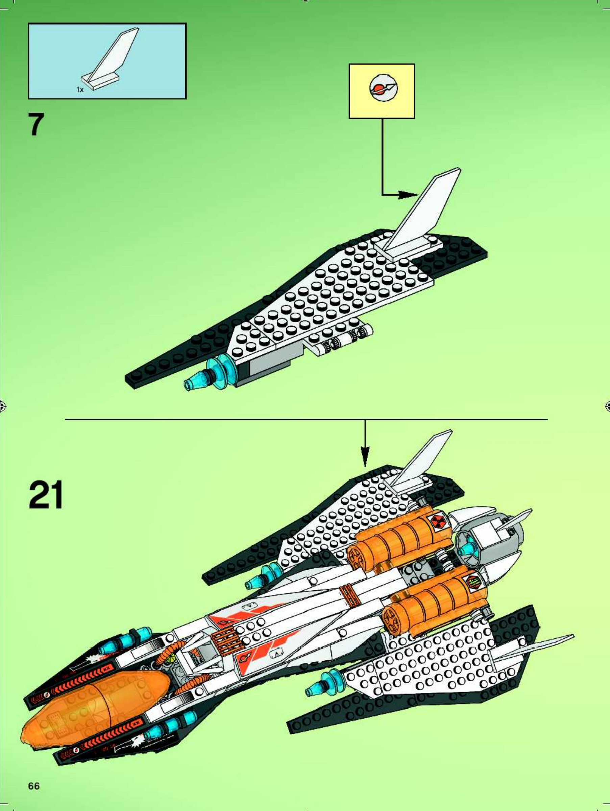SET 7690 · AIREagle command shuttleLong amber canopy, swept white wings, twin orange enginesLEGO manual, page 66 · Brickset
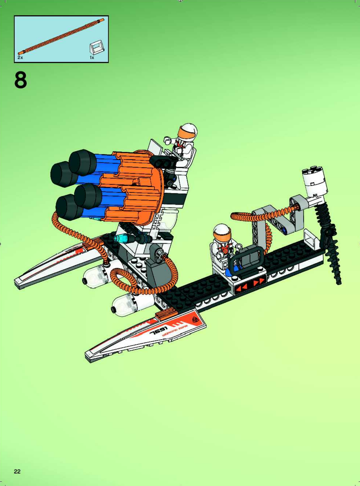SET 7691 · GROUNDMothership-assault defence sledTwin runners, open control seats, four orange launch tubesLEGO manual, page 22 · Brickset
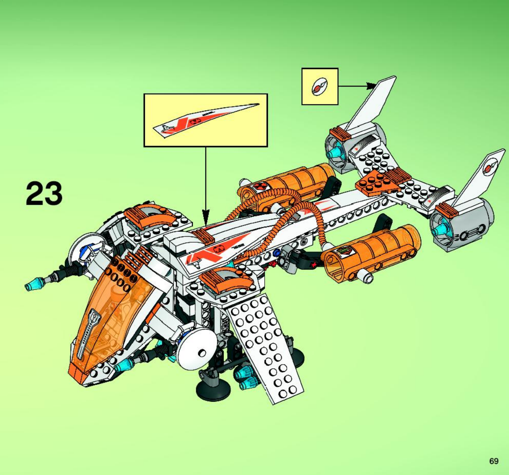SET 7692 · AIRMX-71 Recon DropshipSloping front wings, long spine, three rear engines and amber cargo podsLEGO manual, page 69 · Brickset
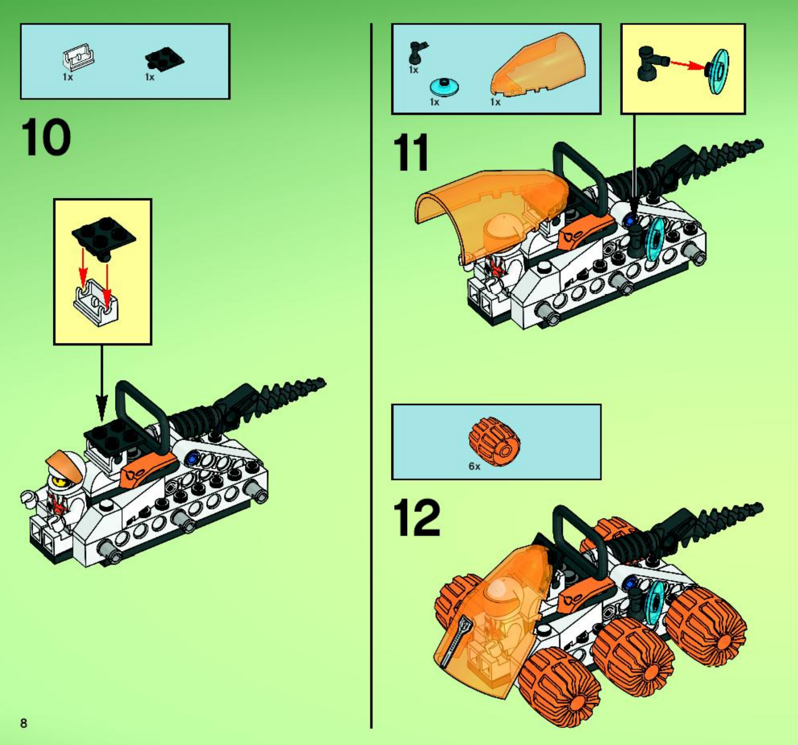SET 7692 · GROUNDRecon drilling roverSix orange wheels, curved amber cab, rear drill and roll barLEGO manual, page 8 · Brickset
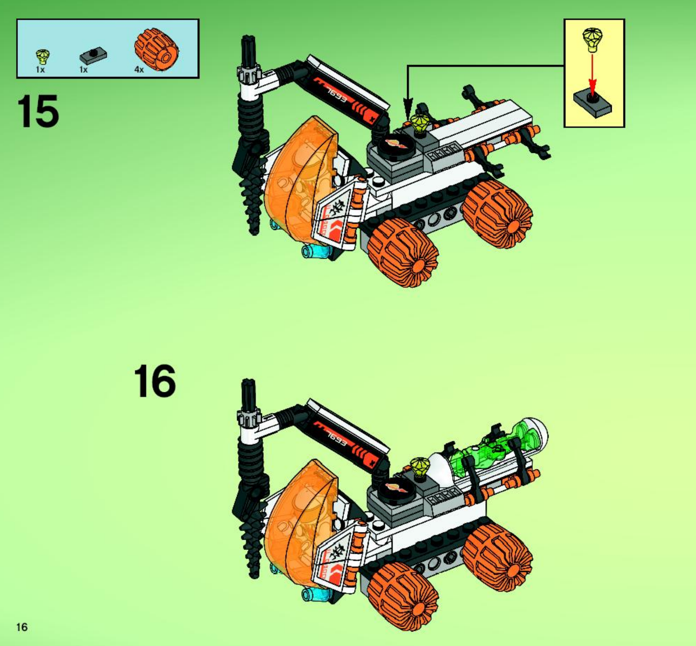SET 7693 · GROUNDAlien Strike mining truckFour orange wheels, curved amber cab, articulated vertical drillLEGO manual, page 16 · Brickset
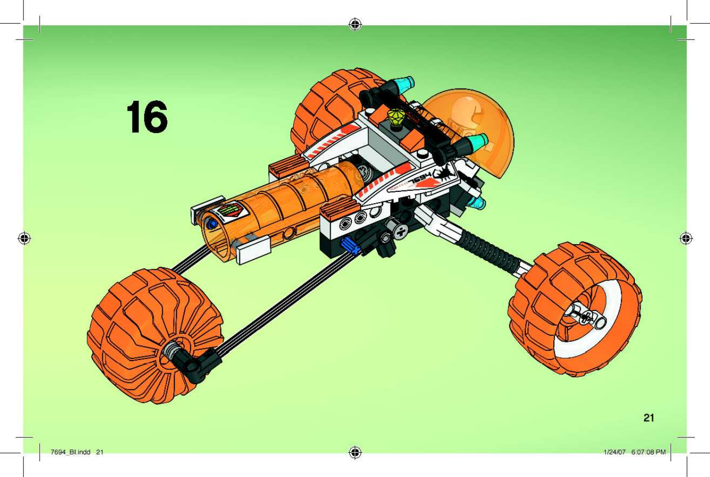SET 7694 · GROUNDMT-31 TrikeTwo huge front wheels, single trailing wheel, narrow white fuselageLEGO manual, page 21 · Brickset
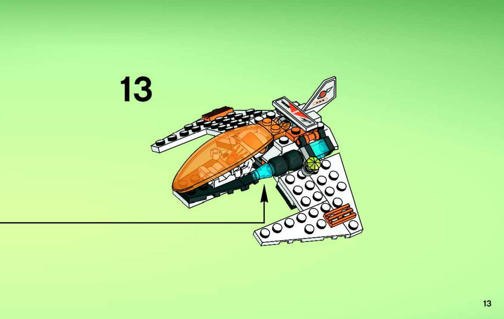SET 7695 · AIRMX-11 Astro FighterSmall swept wings, bubble canopy, single over-cockpit instrumentLEGO manual, page 13 · Brickset
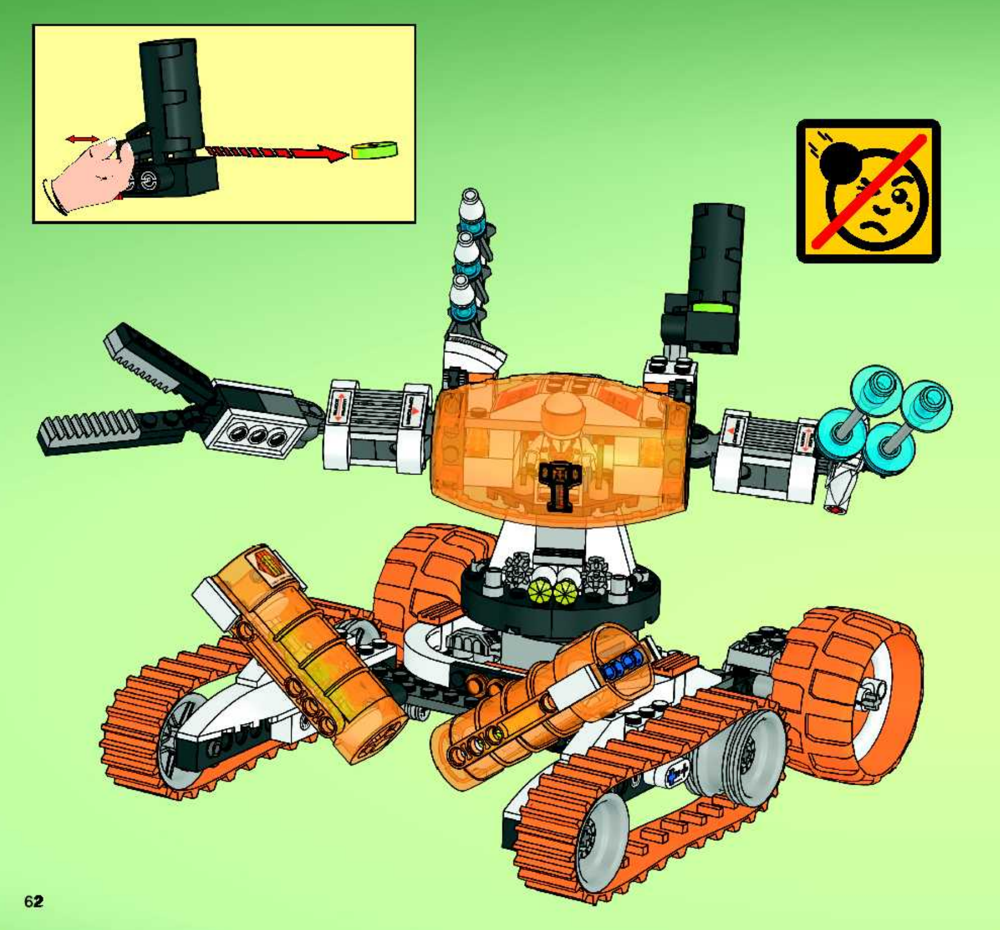SET 7697 · GROUNDMT-51 Claw-TankTwin orange front tracks, rear wheels, raised cab and reaching clawLEGO manual, page 62 · Brickset
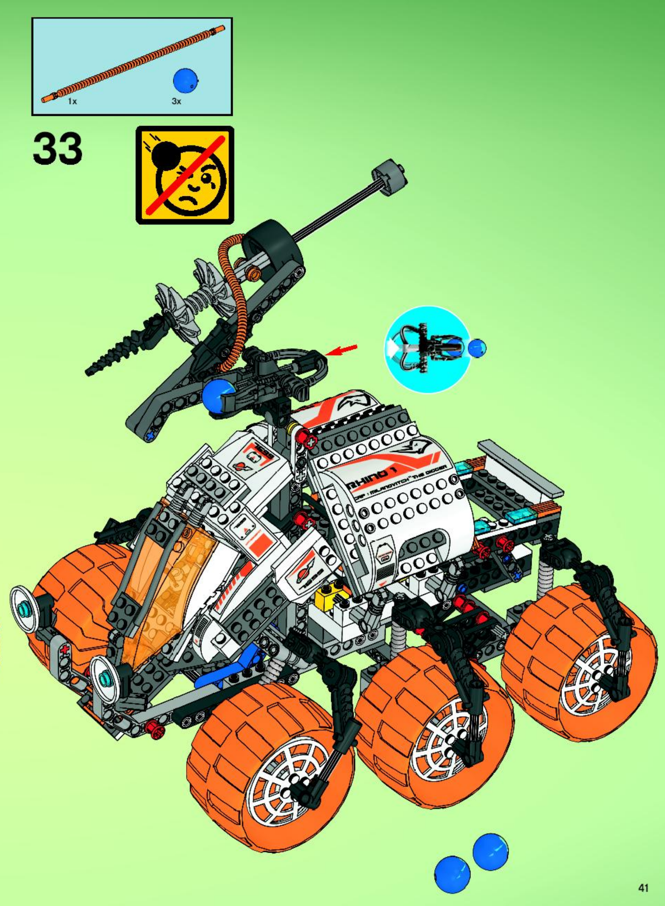SET 7699 · GROUNDMT-101 Armored Drilling UnitSix oversized wheels, sloped armoured cab, raised drilling boomLEGO manual, page 41 · Brickset
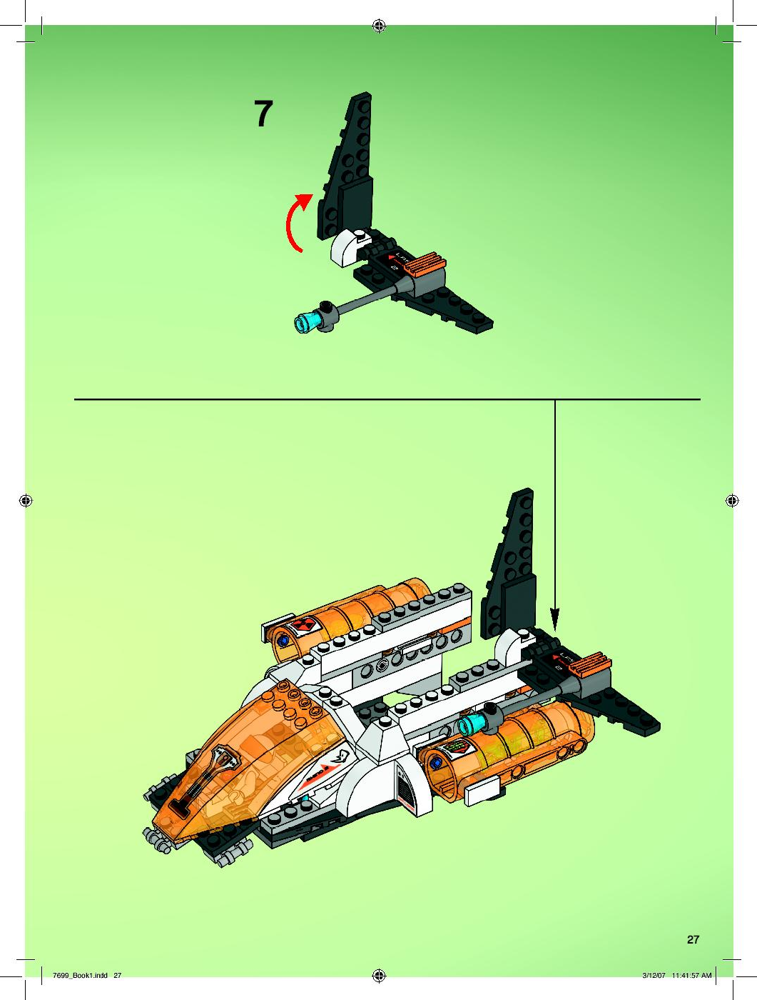SET 7699 · AIRMT-101 transport scoutDetachable wedge flyer, twin amber cargo pods and tall split tailLEGO manual, page 27 · Brickset
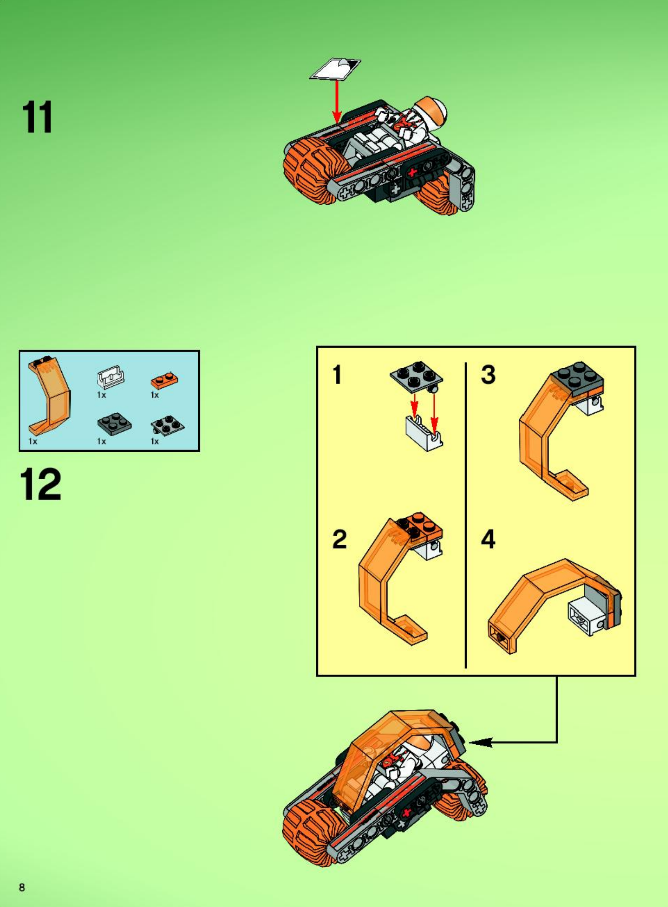SET 7699 · GROUNDMT-101 scout bikeTwo inline orange wheels beneath a compact amber roll cageLEGO manual, page 8 · Brickset